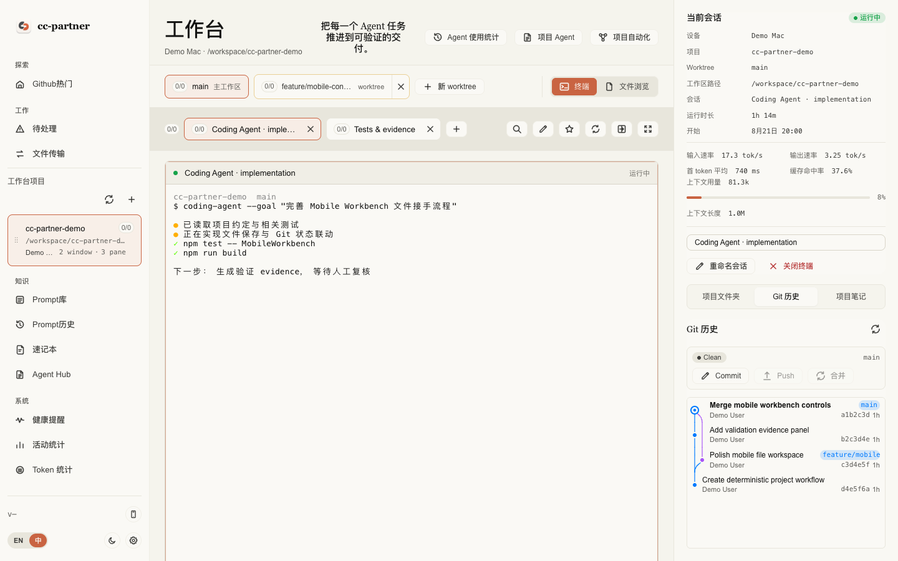
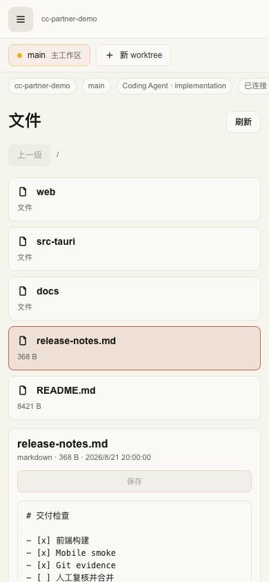

01 / AGENT HUB7 CLI AGENTS多 Agent 指令与资产
统一管理用户级、远端设备和项目级指令；公共 / 适配 / 独有三槽分开维护。
cc-partner 不替模型写代码。它负责管理 CLI Agent 周围那些仍然需要人维护的项目上下文、并行现场和交付证据。

01Worktree + Terminal02Agent Hub + Prompt03Transfer + Capture04Health + Activity
不是另做一排互不相关的小工具，而是减少 CLI Agent 开发过程中的复制、查找、跨设备搬运和上下文切换。
01 / AGENT HUB7 CLI AGENTS统一管理用户级、远端设备和项目级指令；公共 / 适配 / 独有三槽分开维护。
02 / PROMPTREUSABLE标题、正文、标签、搜索、复制、版本历史与恢复；支持局域网和 GitHub 私有仓库同步。
03 / TRANSFERLAN任意大小文件分块传输并做 SHA256 校验；双方能力匹配、源指纹一致时可断点续传。
04 / CAPTURECLIPBOARD全局快捷键框选，支持矩形/箭头标注、6 色与撤销，确认后合成 PNG 写入剪贴板。
05 / HEALTHREMINDER久坐、喝水、全屏休息倒计时，支持免打扰、暂停、延迟与近 7 天习惯统计。
06 / ACTIVITYLOCAL DATA查看活跃/闲置分钟、应用使用时长、窗口标题排行和 24 小时活跃分布。
cc-partner 不是新的 Coding Agent，也不替你选择模型。它处理的是 Claude Code、Codex、OpenCode 这类 CLI Agent 写代码之外的工程现场：项目、分支、终端、文件、验证与交付。
01 / WHY为什么做它多个 Agent 并行时，比较稳妥的做法是给每个任务独立的 worktree + branch，避免它们共用一个目录、Git index 和当前分支。但 worktree 一多，人就要维护创建、切换、状态、终端对应、提交、合并和清理。
cc-partner 把这些操作放进 Workbench：项目下直接创建和切换 worktree，每个 worktree 管理自己的 terminal window / pane；旁边同步显示 Git 状态、文件和提交树，完成后可以 AI commit、一键合并并清理源 worktree。它减少并行执行时互相踩现场，但修改同一段代码时仍可能出现合并冲突。
02 / FEATURES目前主要能力03 / BOUNDARIES实际使用边界04 / TRY IT下载与反馈目前提供 macOS、Windows、Ubuntu / Linux 安装包。源码、构建方式、测试范围和未完成的真机验证都放在仓库文档里。
GitHub：github.com/mmletgo/cc-partner
项目仍在持续迭代，欢迎试用、提 Issue，也欢迎直接指出设计或实现里不合理的地方。